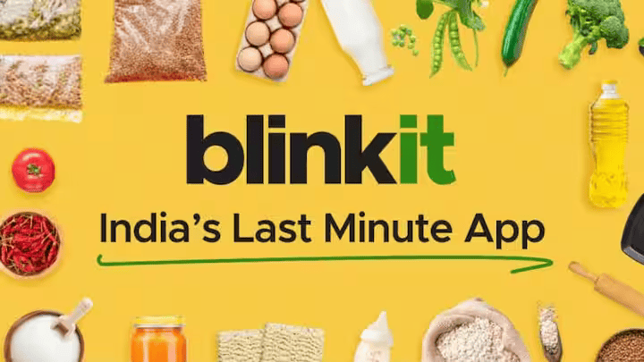

Exploring Coffee Quality Data with Power BI
An interactive Power BI project analyzing the Coffee Quality Institute (CQI) dataset to uncover how sensory attributes, processing methods, and regions influence coffee quality scores.
Laptop Price Insights: Machine Learning Meets Power BI

Predicting laptop prices using Machine Learning (Python) and Power BI. Includes EDA, feature engineering, model building, hyperparameter tuning, and interactive dashboard with business insights.
Global Layoff Trends Analysis
Using SQL
Performed data cleaning and exploratory data analysis (EDA) on a global layoffs dataset (2020–present) using SQL. Analyzed patterns across industries, countries, and company stages to uncover the impact of COVID-19 on workforce reductions and post-pandemic recovery trends.
IoMT Healthcare Risk Prediction (Excel + Python)
Interactive Excel analytics + ML health risk prediction
This project predicts patient health status and analyzes the vital signs and medical history contributing to different health risk levels. It combines Excel-based data analysis and dashboarding with Python-based machine learning to uncover key health indicators and predict risk categories such as Healthy, At Risk, and Critical.
Retail Sales Insights : BlinkIT Grocery Data Analysis Using Excel

Performed comprehensive Excel-based analysis of BlinkIT’s sales performance, customer satisfaction, and inventory distribution to derive actionable insights and optimize business performance
I’m a Data Analyst with a background in Biomedical Engineering and Medical Informatics. I specialize in data visualization,
statistical analysis, and predictive modeling. I enjoy uncovering insights that help drive strategic decisions.
- 💡 Tools: SQL, Python (Pandas, NumPy), Power BI, Excel
- 📊 Interests: Data Analytics, Healthcare Analytics, Machine Learning
- 🎓 Education: M.Tech in Medical Informatics
Download my resume to learn more about my experience and skills in data analytics.
📄 DOWNLOAD RESUME

{kind=link}